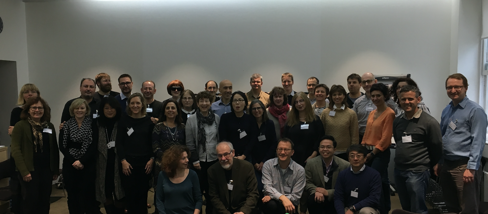

* ICSE 2018 * Technical Papers

The Program Board meeting in London Dec 6-7, discussing the incoming papers and their reviews
Congratulation to the authors of the accepted papers. In total 105 papers have been accepted of 502 submitted, or 21%. 297 papers have been invited to submit a poster and an extended abstract of their work.
You can find the list of accepted papers at the following location.
Wed 30 May
11:00 - 12:30: Technical Papers - Apps and App Stores I at H2 room Chair(s): Jocelyn SimmondsUniversity of Chile | ||||||||||||||||||||||||||||||||||||||||||
| 11:00 - 11:20 Talk | Pei WangPennsylvania State University, Qinkun Bao, Li Wang, Shuai Wang, Zhaofeng Chen, Tao Wei, Dinghao Wu Pre-print Media Attached | |||||||||||||||||||||||||||||||||||||||||
| 11:20 - 11:40 Talk | Xiaoyin WangUniversity of Texas at San Antonio, USA, Xue Qin, Mitra Bokaei Hosseini, Rocky Slavin, Travis BreauxCarnegie Mellon University, Jianwei Niu | |||||||||||||||||||||||||||||||||||||||||
| 11:40 - 12:00 Talk | Cuiyun GaoComputer Science and Engineering, The Chinese University of Hong Kong, Jichuan Zeng, Michael Lyu, Irwin King Pre-print | |||||||||||||||||||||||||||||||||||||||||
| 12:00 - 12:20 Talk | Rodrigo MoralesConcordia University, Rubén Saborido Infantes, Foutse KhomhPolytechnique Montréal, Francisco Chicano, Giuliano AntoniolPolytechnique Montréal Link to publication DOI Pre-print | |||||||||||||||||||||||||||||||||||||||||
| 12:20 - 12:30 Talk | ||||||||||||||||||||||||||||||||||||||||||
11:00 - 12:30: Technical Papers - Human and Social Aspects of Computing I at J1 room Chair(s): Ita RichardsonLero - The Irish Software Research Centre and University of Limerick | ||||||||||||||||||||||||||||||||||||||||||
| 11:00 - 11:20 Talk | Bin Lin, Fiorella ZampettiUniversity of Sannio, Gabriele BavotaUniversità della Svizzera italiana (USI), Massimiliano Di PentaUniversity of Sannio, Michele LanzaUniversità della Svizzera italiana (USI), Rocco OlivetoUniversity of Molise | |||||||||||||||||||||||||||||||||||||||||
| 11:20 - 11:40 Talk | Shurui ZhouCarnegie Mellon University, USA, Ştefan Stănciulescu, Olaf Leßenich, Yingfei XiongPeking University, Andrzej WąsowskiIT University of Copenhagen, Denmark, Christian KästnerCarnegie Mellon University Pre-print File Attached | |||||||||||||||||||||||||||||||||||||||||
| 11:40 - 12:00 Talk | Inayat Rehman, Mehdi MirakhorliRochester Institute of Technology, Mei NagappanUniversity of Waterloo, Azad Aralbay, Matthew Thornton | |||||||||||||||||||||||||||||||||||||||||
| 12:00 - 12:20 Talk | Fabio CalefatoUniversity of Bari, Filippo LanubileUniversity of Bari, Federico Maiorano, Nicole NovielliUniversity of Bari DOI Pre-print | |||||||||||||||||||||||||||||||||||||||||
| 12:20 - 12:30 Talk | ||||||||||||||||||||||||||||||||||||||||||
11:00 - 12:30: Technical Papers - Software Evolution and Maintenance I at G1 room Chair(s): Chanchal K. RoyUniversity of Saskatchewan | ||||||||||||||||||||||||||||||||||||||||||
| 11:00 - 11:20 Talk | ||||||||||||||||||||||||||||||||||||||||||
| 11:20 - 11:40 Talk | ||||||||||||||||||||||||||||||||||||||||||
| 11:40 - 12:00 Talk | Xiangyu LiGeorgia Institute of Technology, Shaowei ZhuGeorgia Institute of Technology, Marcelo d'AmorimFederal University of Pernambuco, Alessandro OrsoGeorgia Tech Pre-print File Attached | |||||||||||||||||||||||||||||||||||||||||
| 12:00 - 12:20 Research paper | Link to publication DOI | |||||||||||||||||||||||||||||||||||||||||
| 12:20 - 12:30 Talk | ||||||||||||||||||||||||||||||||||||||||||
11:00 - 12:30: Technical Papers - Software Repair I at H1 room Chair(s): Lars GrunskeHumboldt-Universität zu Berlin | ||||||||||||||||||||||||||||||||||||||||||
| 11:00 - 11:20 Talk | Ming WenThe Hong Kong University of Science and Technology, Junjie ChenPeking University, Rongxin WuDepartment of Computer Science and Engineering, The Hong Kong University of Science and Technology, Dan HaoPeking University, Shing-Chi CheungDepartment of Computer Science and Engineering, The Hong Kong University of Science and Technology Pre-print | |||||||||||||||||||||||||||||||||||||||||
| 11:20 - 11:40 Talk | Jinru Hua, Mengshi ZhangUniversity of Texas at Austin, USA, Kaiyuan Wang, Sarfraz KhurshidUniversity of Texas at Austin File Attached | |||||||||||||||||||||||||||||||||||||||||
| 11:40 - 12:00 Talk | Jooyong YiInnopolis University, Shin Hwei Tan, Sergey MechtaevNational University of Singapore, Marcel BöhmeMonash University, Abhik RoychoudhuryNational University of Singapore Pre-print | |||||||||||||||||||||||||||||||||||||||||
| 12:00 - 12:20 Talk | Manish MotwaniUniversity of Massachusetts, Amherst, Sandhya Sankaranarayanan, René JustUniversity of Massachusetts, USA, Yuriy BrunUniversity of Massachusetts, Amherst Link to publication DOI Pre-print | |||||||||||||||||||||||||||||||||||||||||
| 12:20 - 12:30 Talk | ||||||||||||||||||||||||||||||||||||||||||
| 14:00 - 14:20 Talk | Safwat HassanQueens University, Kingston, Canada, Chakkrit TantithamthavornUniversity of Adelaide, Australia, Cor-Paul BezemerQueen's University, Kingston, Ontario, Ahmed E. HassanQueen's University | |||||||||||||||||||||||||||||||||||||||||
| 14:20 - 14:40 Talk | Kevin MoranCollege of William & Mary, Boyang Li, Carlos Bernal-Cárdenas, Dan Jelf, Denys PoshyvanykWilliam and Mary Pre-print Media Attached | |||||||||||||||||||||||||||||||||||||||||
| 14:40 - 15:00 Talk | Yixue ZhaoUniversity of Southern California, USA, Marcelo Laser, Yingjun LyuUniversity of Southern California, Nenad MedvidovićUniversity of Southern California DOI Pre-print Media Attached | |||||||||||||||||||||||||||||||||||||||||
| 15:00 - 15:20 Talk | Shin Hwei Tan, Zhen DongNational University of Singapore, Singapore, Xiang Gao, Abhik RoychoudhuryNational University of Singapore Pre-print File Attached | |||||||||||||||||||||||||||||||||||||||||
| 15:20 - 15:30 Talk | ||||||||||||||||||||||||||||||||||||||||||
14:00 - 15:30: Technical Papers - Open-Source Systems at J1 room Chair(s): Andrzej WąsowskiIT University of Copenhagen, Denmark | ||||||||||||||||||||||||||||||||||||||||||
| 14:00 - 14:20 Talk | Pre-print File Attached | |||||||||||||||||||||||||||||||||||||||||
| 14:20 - 14:40 Talk | Igor SteinmacherFederal University of Technology - Paraná / Northern Arizona University, Gustavo PintoUFPA, Igor WieseFederal University of Technology - Paraná (UTFPR), Marco GerosaNorthern Arizona University Pre-print | |||||||||||||||||||||||||||||||||||||||||
| 14:40 - 15:00 Talk | Mojtaba BagherzadehQueen's University, Nafiseh Kahani, Cor-Paul BezemerQueen's University, Kingston, Ontario, Ahmed E. HassanQueen's University, Juergen DingelQueen's University, Kingston, Ontario, James R. Cordy Link to publication Pre-print | |||||||||||||||||||||||||||||||||||||||||
| 15:00 - 15:20 Talk | Christopher Vendome, Daniel M. German, Massimiliano Di PentaUniversity of Sannio, Gabriele BavotaUniversità della Svizzera italiana (USI), Mario Linares-VásquezSystems and Computing Engineering Department , Universidad de los Andes , Bogotá, Colombia , Denys PoshyvanykWilliam and Mary | |||||||||||||||||||||||||||||||||||||||||
| 15:20 - 15:30 Talk | ||||||||||||||||||||||||||||||||||||||||||
| 14:00 - 14:20 Talk | Lingming ZhangUniversity of Texas at Dallas | |||||||||||||||||||||||||||||||||||||||||
| 14:20 - 14:40 Talk | Pre-print | |||||||||||||||||||||||||||||||||||||||||
| 14:40 - 15:00 Talk | Breno MirandaFederal University of Pernambuco, Emilio CrucianiGran Sasso Science Institute, L'Aquila, Italy, Roberto VerdecchiaGran Sasso Science Institute, Vrije Universiteit Amsterdam, Antonia BertolinoCNR-ISTI DOI Pre-print File Attached | |||||||||||||||||||||||||||||||||||||||||
| 15:00 - 15:20 Talk | Kaiyuan Wang, Chenguang ZhuUniversity of Texas, Austin, Ahmet CelikUniversity of Texas at Austin, USA, Jongwook Kim, Don BatoryUniversity of Texas, Austin, Milos GligoricUniversity of Texas at Austin File Attached | |||||||||||||||||||||||||||||||||||||||||
| 15:20 - 15:30 Talk | ||||||||||||||||||||||||||||||||||||||||||
14:00 - 15:30: Technical Papers - Software Repair II at H1 room Chair(s): Alessandro OrsoGeorgia Tech | ||||||||||||||||||||||||||||||||||||||||||
| 14:00 - 14:20 Talk | Sergey MechtaevNational University of Singapore, Manh-Dung Nguyen, Yannic NollerHumboldt-Universität zu Berlin, Lars GrunskeHumboldt-Universität zu Berlin, Abhik RoychoudhuryNational University of Singapore File Attached | |||||||||||||||||||||||||||||||||||||||||
| 14:20 - 14:40 Talk | Sonal MahajanUniversity of Southern California, USA, Negarsadat Abolhassani, Phil McMinnUniversity of Sheffield, William G.J. HalfondUniversity of Southern California | |||||||||||||||||||||||||||||||||||||||||
| 14:40 - 15:00 Talk | Pre-print File Attached | |||||||||||||||||||||||||||||||||||||||||
| 15:00 - 15:20 Talk | Le Dinh Xuan BachSingapore Management University, Singapore, Ferdian Thung, David LoSingapore Management University, Claire Le GouesCarnegie Mellon University Pre-print | |||||||||||||||||||||||||||||||||||||||||
| 15:20 - 15:30 Talk | ||||||||||||||||||||||||||||||||||||||||||
16:00 - 18:00: Technical Papers - Empirical Software Engineering at J1 room Chair(s): Marija MikicGoogle | ||||||||||||||||||||||||||||||||||||||||||
| 16:00 - 16:20 Full-paper | DOI Pre-print | |||||||||||||||||||||||||||||||||||||||||
| 16:20 - 16:40 Talk | Lingling FanEast China Normal University, China/Nanyang Technological University, Singapore, Ting SuNanyang Technological University, Singapore, Sen ChenEast China Normal University, China/Nanyang Technological University, Singapore, Guozhu MengNanyang Technological University, Singapore, Yang LiuNanyang Technological University, Singapore, Lihua Xu, Geguang Pu, Zhendong SuUniversity of California, Davis DOI Pre-print File Attached | |||||||||||||||||||||||||||||||||||||||||
| 16:40 - 17:00 Talk | Link to publication DOI | |||||||||||||||||||||||||||||||||||||||||
| 17:00 - 17:20 Talk | Mahmoud HammadUniversity of California, Irvine, Joshua Garcia, Sam MalekUniversity of California, Irvine DOI Pre-print Media Attached File Attached | |||||||||||||||||||||||||||||||||||||||||
| 17:20 - 17:40 Talk | Link to publication DOI Media Attached | |||||||||||||||||||||||||||||||||||||||||
| 17:40 - 18:00 Talk | ||||||||||||||||||||||||||||||||||||||||||
16:00 - 17:30: Technical Papers - Program Reduction Techniques at H2 room Chair(s): Jianjun ZhaoKyushu University | ||||||||||||||||||||||||||||||||||||||||||
| 16:00 - 16:20 Talk | Hua YanUniversity of New South Wales, Yulei SuiUniversity of Technology Sydney, Australia, Shiping ChenData61 at CSIRO, Australia / UNSW, Australia, Jingling XueUNSW Sydney | |||||||||||||||||||||||||||||||||||||||||
| 16:20 - 16:40 Talk | ||||||||||||||||||||||||||||||||||||||||||
| 16:40 - 17:00 Talk | David TrabishTel Aviv University, Andrea MattavelliImperial College London, Noam RinetzkyTel Aviv University, Cristian CadarImperial College London Link to publication File Attached | |||||||||||||||||||||||||||||||||||||||||
| 17:00 - 17:20 Talk | Chengnian SunUniversity of California, Davis, Yuanbo Li, Qirun ZhangUniversity of California, Davis, Tianxiao Gu, Zhendong SuUniversity of California, Davis | |||||||||||||||||||||||||||||||||||||||||
| 17:20 - 17:30 Talk | ||||||||||||||||||||||||||||||||||||||||||
16:00 - 17:30: Technical Papers - Security, Privacy and Trust I at G1 room Chair(s): Antonio CarzanigaUniversità della Svizzera italiana | ||||||||||||||||||||||||||||||||||||||||||
| 16:00 - 16:20 Talk | ||||||||||||||||||||||||||||||||||||||||||
| 16:20 - 16:40 Talk | Wei YangUniversity of Illinois at Urbana-Champaign, Mukul PrasadFujitsu Laboratories of America, Tao XieUniversity of Illinois at Urbana-Champaign | |||||||||||||||||||||||||||||||||||||||||
| 16:40 - 17:00 Talk | Katsiaryna Labunets, Fabio MassacciUniversity of Trento, Federica Paci, Sabrina Marczak, Flávio Moreira de Oliveira Link to publication DOI Pre-print File Attached | |||||||||||||||||||||||||||||||||||||||||
| 17:00 - 17:20 Talk | ||||||||||||||||||||||||||||||||||||||||||
| 17:20 - 17:30 Talk | ||||||||||||||||||||||||||||||||||||||||||
16:00 - 17:30: Technical Papers - Test Generation at H1 room Chair(s): Federica SarroUniversity College London | ||||||||||||||||||||||||||||||||||||||||||
| 16:00 - 16:20 Talk | Leonardo MarianiUniversity of Milano Bicocca, Mauro PezzèUniversity of Milano-Bicocca, Italy, Daniele Zuddas Pre-print | |||||||||||||||||||||||||||||||||||||||||
| 16:20 - 16:40 Talk | Xinyu WangZhejiang University, Jun SunSingapore University of Technology and Design, Zhenbang ChenCollege of Computer, National University of Defense Technology, Peixin Zhang, Jingyi WangSingapore University of Technology and Design, Yun Lin Pre-print | |||||||||||||||||||||||||||||||||||||||||
| 16:40 - 17:00 Talk | ||||||||||||||||||||||||||||||||||||||||||
| 17:00 - 17:20 Talk | ||||||||||||||||||||||||||||||||||||||||||
| 17:20 - 17:30 Talk | ||||||||||||||||||||||||||||||||||||||||||
Thu 31 May
11:00 - 12:30: Technical Papers - Communities and Ecosystems at H1 room Chair(s): Alexander SerebrenikEindhoven University of Technology | ||||||||||||||||||||||||||||||||||||||||||
| 11:00 - 11:20 Talk | Mauricio AnicheDelft University of Technology, Netherlands, Christoph TreudeThe University of Adelaide, Igor SteinmacherFederal University of Technology - Paraná / Northern Arizona University, Igor WieseFederal University of Technology - Paraná (UTFPR), Gustavo PintoUFPA, Margaret-Anne StoreyUniversity of Victoria, Marco GerosaNorthern Arizona University Pre-print | |||||||||||||||||||||||||||||||||||||||||
| 11:20 - 11:40 Talk | Asher TrockmanUniversity of Evansville, Shurui ZhouCarnegie Mellon University, USA, Christian KästnerCarnegie Mellon University, Bogdan VasilescuCarnegie Mellon University Pre-print Media Attached | |||||||||||||||||||||||||||||||||||||||||
| 11:40 - 12:00 Talk | Daniel M. German, Gregorio RoblesUniversidad Rey Juan Carlos, Germán Poo-Caamaño, Xin YangUnionbigdata.com, Hajimu Iida, Katsuro InoueOsaka University Pre-print File Attached | |||||||||||||||||||||||||||||||||||||||||
| 12:00 - 12:20 Talk | Mirco FranzagoUniversity of L'Aquila, Italy, Ivano MalavoltaVrije Universiteit Amsterdam, Davide Di RuscioUniversity of L'Aquila, Henry MucciniUniversity of L'Aquila Link to publication DOI Pre-print | |||||||||||||||||||||||||||||||||||||||||
| 12:20 - 12:30 Talk | ||||||||||||||||||||||||||||||||||||||||||
11:00 - 12:30: Technical Papers - Empirical Studies of Code at H2 room Chair(s): Natalia JuristoFacultad de Informática - UPM | ||||||||||||||||||||||||||||||||||||||||||
| 11:00 - 11:20 Talk | Dayi LinQueen's University, Cor-Paul BezemerQueen's University, Kingston, Ontario, Ahmed E. HassanQueen's University Link to publication DOI Pre-print | |||||||||||||||||||||||||||||||||||||||||
| 11:20 - 11:40 Talk | Benjamin DanglotUniversity Lille 1 and INRIA, Phlippe Preux, Benoit BaudryKTH Royal Institute of Technology, Sweden, Martin MonperrusKTH Royal Institute of Technology DOI Pre-print | |||||||||||||||||||||||||||||||||||||||||
| 11:40 - 12:00 Talk | Fabio Palomba, Gabriele BavotaUniversità della Svizzera italiana (USI), Massimiliano Di PentaUniversity of Sannio, Fausto Fasano, Rocco OlivetoUniversity of Molise, Andrea De LuciaUniversity of Salerno | |||||||||||||||||||||||||||||||||||||||||
| 12:00 - 12:20 Talk | Nikolaos TsantalisConcordia University, Canada, Matin Mansouri, Laleh M-Eshkevari, Davood MazinanianUniversity of British Columbia, Danny DigSchool of EECS at Oregon State University Pre-print Media Attached | |||||||||||||||||||||||||||||||||||||||||
| 12:20 - 12:30 Talk | ||||||||||||||||||||||||||||||||||||||||||
11:00 - 12:30: Technical Papers - Security, Privacy and Trust II at G1 room Chair(s): Julia RubinUniversity of British Columbia | ||||||||||||||||||||||||||||||||||||||||||
| 11:00 - 11:20 Talk | Radu CalinescuUniversity of York, UK, Danny WeynsKU Leuven, Simos Gerasimou, Muhammad Usman IftikharLinnaeus University, Sweden, Ibrahim Habli, Tim Kelly | |||||||||||||||||||||||||||||||||||||||||
| 11:20 - 11:40 Talk | Sylvain Frey, Awais RashidUniversity of Bristol, UK, Pauline Anthonysamy, Maria Pinto-AlbuquerqueInstituto Universitário de Lisboa (ISCTE-IUL), Syed Asad Naqvi | |||||||||||||||||||||||||||||||||||||||||
| 11:40 - 12:00 Talk | Joshua Garcia, Mahmoud HammadUniversity of California, Irvine, Sam MalekUniversity of California, Irvine Link to publication File Attached | |||||||||||||||||||||||||||||||||||||||||
| 12:00 - 12:20 Talk | Patrick Morrison, Rahul PanditaPhase Change Software, Xusheng XiaoCase Western Reserve University, Ram Chillarege, Laurie WilliamsNorth Carolina State University | |||||||||||||||||||||||||||||||||||||||||
| 12:20 - 12:30 Talk | ||||||||||||||||||||||||||||||||||||||||||
11:00 - 12:30: Technical Papers - Test Improvement at Congress Hall Chair(s): Yves Le TraonUniversity of Luxembourg | ||||||||||||||||||||||||||||||||||||||||||
| 11:00 - 11:20 Talk | Jonathan BellGeorge Mason University, Owolabi LegunsenUniversity of Illinois at Urbana-Champaign, Michael HiltonCarnegie Mellon University, USA, Lamyaa Eloussi, Tifany Yung, Darko MarinovUniversity of Illinois at Urbana-Champaign Pre-print Media Attached | |||||||||||||||||||||||||||||||||||||||||
| 11:20 - 11:40 Talk | Wontae Choi, Koushik SenUniversity of California, Berkeley, George NeculaUniversity of California, Berkeley, Wenyu WangUniversity of Illinois at Urbana-Champaign | |||||||||||||||||||||||||||||||||||||||||
| 11:40 - 12:00 Talk | Michael MarcozziImperial College London, Sebastien Bardin, Nikolai Kosmatov, Mike PapadakisUniversity of Luxembourg, Virgile Prevosto, Loïc Correnson Link to publication DOI File Attached | |||||||||||||||||||||||||||||||||||||||||
| 12:00 - 12:20 Talk | Junghyun Kwon, In-Young KoKorea Advanced Institute of Science and Technology, Gregg RothermelUniversity of Nebraska - Lincoln | |||||||||||||||||||||||||||||||||||||||||
| 12:20 - 12:30 Talk | ||||||||||||||||||||||||||||||||||||||||||
14:00 - 15:30: Technical Papers - Human and Social Aspects of Computing II at H1 room Chair(s): Margaret-Anne StoreyUniversity of Victoria | ||||||||||||||||||||||||||||||||||||||||||
| 14:00 - 14:20 Talk | Hung Phan, Hoan NguyenIowa State University, Ngoc Tran, Linh Truong, Anh Nguyen, Tien NguyenThe University of Texas - Dallas | |||||||||||||||||||||||||||||||||||||||||
| 14:20 - 14:40 Talk | Andrew HeadUC Berkeley, Caitlin SadowskiGoogle, Emerson Murphy-HillNorth Carolina State University, Andrea Knight Pre-print | |||||||||||||||||||||||||||||||||||||||||
| 14:40 - 15:00 Talk | Pre-print Media Attached | |||||||||||||||||||||||||||||||||||||||||
| 15:00 - 15:20 Talk | Chunyang ChenNanyang Technological University, Singapore, Ting SuNanyang Technological University, Singapore, Guozhu MengNanyang Technological University, Singapore, Zhenchang XingAustralia National University, Yang LiuNanyang Technological University, Singapore Pre-print | |||||||||||||||||||||||||||||||||||||||||
| 15:20 - 15:30 Talk | ||||||||||||||||||||||||||||||||||||||||||
14:00 - 15:30: Technical Papers - Program Analysis I at G1 room Chair(s): Darko MarinovUniversity of Illinois at Urbana-Champaign | ||||||||||||||||||||||||||||||||||||||||||
| 14:00 - 14:20 Talk | Pre-print File Attached | |||||||||||||||||||||||||||||||||||||||||
| 14:20 - 14:40 Talk | Yifei ZhangUNSW Sydney, Yulei SuiUniversity of Technology Sydney, Australia, Jingling XueUNSW Sydney DOI Pre-print File Attached | |||||||||||||||||||||||||||||||||||||||||
| 14:40 - 15:00 Talk | Jeff HuangTexas A&M University Pre-print | |||||||||||||||||||||||||||||||||||||||||
| 15:00 - 15:20 Talk | Pre-print | |||||||||||||||||||||||||||||||||||||||||
| 15:20 - 15:30 Talk | ||||||||||||||||||||||||||||||||||||||||||
14:00 - 15:30: Technical Papers - Studying Software Engineers I at H2 room Chair(s): Andrew J. KoUniversity of Washington | ||||||||||||||||||||||||||||||||||||||||||
| 14:00 - 14:20 Talk | Anand Ashok Sawant, Mauricio AnicheDelft University of Technology, Netherlands, Arie van DeursenDelft University of Technology, Alberto BacchelliUniversity of Zurich Pre-print | |||||||||||||||||||||||||||||||||||||||||
| 14:20 - 14:40 Talk | Moritz BellerDelft University of Technology, Niels Spruit, Diomidis SpinellisAthens University of Economics and Business, Andy ZaidmanTU Delft Pre-print | |||||||||||||||||||||||||||||||||||||||||
| 14:40 - 15:00 Talk | Xin XiaMonash University, Lingfeng Bao , David LoSingapore Management University, Zhenchang XingAustralia National University, Ahmed E. HassanQueen's University, Shanping Li | |||||||||||||||||||||||||||||||||||||||||
| 15:00 - 15:20 Talk | Miryung KimUniversity of California at Los Angeles, USA, Thomas ZimmermannMicrosoft Research, Robert Deline, Andrew BegelMicrosoft Research Link to publication DOI Authorizer link Pre-print | |||||||||||||||||||||||||||||||||||||||||
| 15:20 - 15:30 Talk | ||||||||||||||||||||||||||||||||||||||||||
| 14:00 - 14:20 Talk | Rongxin WuDepartment of Computer Science and Engineering, The Hong Kong University of Science and Technology, Ming WenThe Hong Kong University of Science and Technology, Shing-Chi CheungDepartment of Computer Science and Engineering, The Hong Kong University of Science and Technology, Hongyu ZhangThe University of Newcastle | |||||||||||||||||||||||||||||||||||||||||
| 14:20 - 14:40 Talk | Mike PapadakisUniversity of Luxembourg, Donghwan ShinKAIST, Shin YooKorea Advanced Institute of Science and Technology, Doo-Hwan BaeKorea Advanced Institute of Science and Technology Pre-print | |||||||||||||||||||||||||||||||||||||||||
| 14:40 - 15:00 Talk | Rafael DutraUC Berkeley, Kevin LaeuferUniversity of California, Berkeley, Jonathan Bachrach, Koushik SenUniversity of California, Berkeley Link to publication DOI Media Attached File Attached | |||||||||||||||||||||||||||||||||||||||||
| 15:00 - 15:20 Talk | Pre-print | |||||||||||||||||||||||||||||||||||||||||
| 15:20 - 15:30 Talk | ||||||||||||||||||||||||||||||||||||||||||
Fri 1 Jun
09:00 - 10:30: Technical Papers - Performance and Maintenance at J2 room Chair(s): Miryung KimUniversity of California at Los Angeles, USA | ||||||||||||||||||||||||||||||||||||||||||
| 09:00 - 09:20 Talk | Pre-print | |||||||||||||||||||||||||||||||||||||||||
| 09:20 - 09:40 Research paper | Junwen YangUniversity of Chicago, Cong Yan, Pranav Subramaniam, Shan LuUniversity of Chicago, Alvin CheungUniversity of Washington Pre-print | |||||||||||||||||||||||||||||||||||||||||
| 09:40 - 10:00 Talk | Zhifei Chen, Bihuan ChenFudan University, Lu Xiao, Xiao WangPurdue University, USA, Lin Chen, Yang LiuNanyang Technological University, Singapore, Baowen Xu | |||||||||||||||||||||||||||||||||||||||||
| 10:00 - 10:20 Talk | Muhammad Moiz ArifConcordia University, Montreal, Canada, Weiyi (Ian) ShangConcordia University, Canada, Emad ShihabConcordia University | |||||||||||||||||||||||||||||||||||||||||
| 10:20 - 10:30 Talk | ||||||||||||||||||||||||||||||||||||||||||
09:00 - 10:30: Technical Papers - Program Analysis II at G1 room Chair(s): Christine JulienThe University of Texas at Austin | ||||||||||||||||||||||||||||||||||||||||||
| 09:00 - 09:20 Talk | Leen Lambers, Daniel StrüberUniversity of Koblenz-Landau, Germany, Gabriele TaentzerUniversität Marburg, Kristopher Born, Jevgenij Huebert DOI Pre-print File Attached | |||||||||||||||||||||||||||||||||||||||||
| 09:20 - 09:40 Talk | Zhiyong ShanWichita State University, Iulian NeamtiuNew Jersey Institute of Technology, Raina SamuelNew Jersey Institute of Technology File Attached | |||||||||||||||||||||||||||||||||||||||||
| 09:40 - 10:00 Talk | Fabio Palomba, Annibale PanichellaDeflt University of Technology, Andy ZaidmanTU Delft, Rocco OlivetoUniversity of Molise, Andrea De LuciaUniversity of Salerno Pre-print | |||||||||||||||||||||||||||||||||||||||||
| 10:00 - 10:20 Talk | Pre-print File Attached | |||||||||||||||||||||||||||||||||||||||||
| 10:20 - 10:30 Talk | ||||||||||||||||||||||||||||||||||||||||||
09:00 - 10:30: Technical Papers - Requirements and Recommender Systems at J1 room Chair(s): Joanne M. AtleeUniversity of Waterloo, Canada | ||||||||||||||||||||||||||||||||||||||||||
| 09:00 - 09:20 Talk | Catarina GralhaNOVA-LINCS, FCT/UNL, Daniela DamianUniversity of Victoria, Anthony I. (Tony) WassermanCarnegie Mellon Silicon Valley, Miguel GoulaoNOVA-LINCS, FCT/UNL, João Araújo Pre-print Media Attached | |||||||||||||||||||||||||||||||||||||||||
| 09:20 - 09:40 Talk | Michael RathTechnische Universität Ilmenau, Jacob RendallUniversity of Notre Dame, Jin L.C. GuoMcGill University, Jane Cleland-HuangUniversity of Notre Dame, Patrick MäderTechnische Universität Ilmenau Pre-print | |||||||||||||||||||||||||||||||||||||||||
| 09:40 - 10:00 Talk | Alireza SadeghiGoogle, Inc, Reyhaneh JabbarvandUniversity of California, Irvine, Negar Ghorbani, Hamid BagheriUniversity of Nebraska-Lincoln, USA, Sam MalekUniversity of California, Irvine | |||||||||||||||||||||||||||||||||||||||||
| 10:00 - 10:20 Talk | ||||||||||||||||||||||||||||||||||||||||||
| 10:20 - 10:30 Talk | ||||||||||||||||||||||||||||||||||||||||||
09:00 - 10:30: Technical Papers - Software Comprehension at H1 room Chair(s): Margaret BurnettOregon State University | ||||||||||||||||||||||||||||||||||||||||||
| 09:00 - 09:20 Talk | Pre-print | |||||||||||||||||||||||||||||||||||||||||
| 09:20 - 09:40 Talk | Jacob KrügerHarz University of Applied Sciences, Germany, Jens Wiemann, Wolfram FenskeUniversity of Magdeburg, Germany, Gunter SaakeUniversity of Magdeburg, Germany, Thomas LeichHarz University of Applied Sciences, Germany | |||||||||||||||||||||||||||||||||||||||||
| 09:40 - 10:00 Talk | Saba AlimadadiNortheastern University, Ali MesbahUniversity of British Columbia, Karthik PattabiramanUniversity of British Columbia | |||||||||||||||||||||||||||||||||||||||||
| 10:00 - 10:20 Talk | ||||||||||||||||||||||||||||||||||||||||||
| 10:20 - 10:30 Talk | ||||||||||||||||||||||||||||||||||||||||||
09:00 - 10:30: Technical Papers - Studying Software Engineers II at H2 room Chair(s): Minghui ZhouPeking University | ||||||||||||||||||||||||||||||||||||||||||
| 09:00 - 09:20 Talk | Eirini KalliamvakouUniversity of Victoria, Christian BirdMicrosoft Research, Thomas ZimmermannMicrosoft Research, Andrew BegelMicrosoft Research, Robert Deline, Daniel M. German | |||||||||||||||||||||||||||||||||||||||||
| 09:20 - 09:40 Talk | Wiesław KopećPolish-Japanese Academy of Information Technology, Bartłomiej Balcerzak, Radosław Nielek, Grzegorz Kowalik, Adam Wierzbicki, Fabio Casati Link to publication DOI | |||||||||||||||||||||||||||||||||||||||||
| 09:40 - 10:00 Talk | ||||||||||||||||||||||||||||||||||||||||||
| 10:00 - 10:20 Talk | Maëlick Claes, Mika MäntyläUniversity of Oulu, Miikka Kuutila, Bram AdamsMCIS, École Polytechnique de Montréal Pre-print | |||||||||||||||||||||||||||||||||||||||||
| 10:20 - 10:30 Talk | ||||||||||||||||||||||||||||||||||||||||||
09:00 - 10:30: Technical Papers - Testing II at E4 room Chair(s): Mike PapadakisUniversity of Luxembourg | ||||||||||||||||||||||||||||||||||||||||||
| 09:00 - 09:20 Talk | Davide Spadini, Mauricio AnicheDelft University of Technology, Netherlands, Margaret-Anne StoreyUniversity of Victoria, Magiel Bruntink, Alberto BacchelliUniversity of Zurich | |||||||||||||||||||||||||||||||||||||||||
| 09:20 - 09:40 Talk | Jingjing Liang, Sebastian ElbaumUniversity of Nebraska-Lincoln, USA, Gregg RothermelUniversity of Nebraska - Lincoln | |||||||||||||||||||||||||||||||||||||||||
| 09:40 - 10:00 Talk | ||||||||||||||||||||||||||||||||||||||||||
| 10:00 - 10:20 Talk | ||||||||||||||||||||||||||||||||||||||||||
| 10:20 - 10:30 Talk | ||||||||||||||||||||||||||||||||||||||||||
11:00 - 12:30: Technical Papers - Code Search, Synthesis, Performance at H1 room Chair(s): Shahar MaozTel Aviv University | ||||||||||||||||||||||||||||||||||||||||||
| 11:00 - 11:20 Research paper | Xiaodong GuThe Hong Kong University of Science and Technology, Hongyu ZhangMicrosoft Research, Sunghun KimHong Kong University of Science and Technology Pre-print | |||||||||||||||||||||||||||||||||||||||||
| 11:20 - 11:40 Talk | Raphaël Sirres, Tegawendé F. BissyandéUniversity of Luxembourg, Luxembourg, Dongsun KimUniversity of Luxembourg, David LoSingapore Management University, Jacques KleinUniversity of Luxembourg, SnT, Kisub KimUniversity of Luxembourg, SnT, Yves Le TraonUniversity of Luxembourg Link to publication DOI Pre-print Media Attached | |||||||||||||||||||||||||||||||||||||||||
| 11:40 - 12:00 Talk | Kisub KimUniversity of Luxembourg, SnT, Dongsun KimUniversity of Luxembourg, Tegawendé F. BissyandéUniversity of Luxembourg, Luxembourg, Eunjong ChoiNara Institute of Science and Technology, Li LiUniversity of Luxembourg, Luxembourg, Jacques KleinUniversity of Luxembourg, SnT, Yves Le TraonUniversity of Luxembourg Link to publication DOI Pre-print Media Attached | |||||||||||||||||||||||||||||||||||||||||
| 12:00 - 12:20 Talk | Calvin LoncaricUniversity of Washington, Michael D. ErnstUniversity of Washington, USA, Emina TorlakUniversity of Washington DOI Pre-print Media Attached | |||||||||||||||||||||||||||||||||||||||||
| 12:20 - 12:30 Talk | ||||||||||||||||||||||||||||||||||||||||||
11:00 - 12:30: Technical Papers - Mining Software Repositories at H2 room Chair(s): Tim MenziesNorth Carolina State University | ||||||||||||||||||||||||||||||||||||||||||
| 11:00 - 11:20 Talk | Shaowei WangQueen's University, Tse-Hsun (Peter) ChenConcordia University, Ahmed E. HassanQueen's University | |||||||||||||||||||||||||||||||||||||||||
| 11:20 - 11:40 Talk | ||||||||||||||||||||||||||||||||||||||||||
| 11:40 - 12:00 Research paper | Tianyi ZhangUniversity of California, Los Angeles, Ganesha UpadhyayaFuturewei Technologies, Anastasia Reinhardt, Hridesh RajanIowa State University, Miryung KimUniversity of California at Los Angeles, USA Pre-print File Attached | |||||||||||||||||||||||||||||||||||||||||
| 12:00 - 12:20 Talk | Lingfeng Bao , Zhenchang XingAustralia National University, Xin XiaMonash University, David LoSingapore Management University, Ahmed E. HassanQueen's University | |||||||||||||||||||||||||||||||||||||||||
| 12:20 - 12:30 Talk | ||||||||||||||||||||||||||||||||||||||||||
11:00 - 12:30: Technical Papers - Models and Modeling I at G1 room Chair(s): Jon WhittleMonash University | ||||||||||||||||||||||||||||||||||||||||||
| 11:00 - 11:20 Talk | Sebastian KrieterMagdeburg University, Thomas ThümTU Braunschweig, Germany, Sandro SchulzeUniversity of Magdeburg, Germany, Reimar SchröterMagdeburg University, Gunter SaakeUniversity of Magdeburg, Germany | |||||||||||||||||||||||||||||||||||||||||
| 11:20 - 11:40 Talk | ||||||||||||||||||||||||||||||||||||||||||
| 11:40 - 12:00 Research paper | Leonardo Da Silva Sousa, Anderson Oliveira, Willian OizumiPUC-Rio, Simone Diniz Junqueira BarbosaPUC-Rio, Alessandro GarciaPUC-Rio, Jaejoon LeeLancaster University, UK, Marcos KalinowskiPontifical Catholic University of Rio de Janeiro (PUC-Rio), Rafael de Mello, Baldoino Neto, Roberto Oliveira, Carlos Lucena, Rodrigo Paes File Attached | |||||||||||||||||||||||||||||||||||||||||
| 12:00 - 12:20 Talk | Kostadin DamevskiVirginia Commonwealth University, Hui Chen, David ShepherdABB, Inc, Nicholas A. KraftABB Corporate Research, Lori Pollock DOI Pre-print | |||||||||||||||||||||||||||||||||||||||||
| 12:20 - 12:30 Talk | ||||||||||||||||||||||||||||||||||||||||||
11:00 - 12:30: Technical Papers - Search-Based Software Engineering I at J1 room Chair(s): Shin YooKorea Advanced Institute of Science and Technology | ||||||||||||||||||||||||||||||||||||||||||
| 11:00 - 11:20 Talk | Raja Ben AbdessalemSnT Centre/University of Luxembourg, Shiva NejatiSnT Centre/University of Luxembourg, Lionel BriandSnT Centre/University of Luxembourg, Thomas Stifter Pre-print File Attached | |||||||||||||||||||||||||||||||||||||||||
| 11:20 - 11:40 Talk | ||||||||||||||||||||||||||||||||||||||||||
| 11:40 - 12:00 Talk | Jun-Wei LinUniversity of California, Irvine, Reyhaneh JabbarvandUniversity of California, Irvine, Joshua Garcia, Sam MalekUniversity of California, Irvine Pre-print File Attached | |||||||||||||||||||||||||||||||||||||||||
| 12:00 - 12:20 Talk | Link to publication DOI Pre-print File Attached | |||||||||||||||||||||||||||||||||||||||||
| 12:20 - 12:30 Talk | ||||||||||||||||||||||||||||||||||||||||||
11:00 - 12:30: Technical Papers - Software Tools and Environments at J2 room Chair(s): Barbora BuhnovaMasaryk University | ||||||||||||||||||||||||||||||||||||||||||
| 11:00 - 11:20 Talk | Oszkár SemeráthBudapest University of Technology and Economics, András Szabolcs Nagy, Daniel VarroMcGill University / Budapest University of Technology and Economics | |||||||||||||||||||||||||||||||||||||||||
| 11:20 - 11:40 Talk | Shafiul Azam ChowdhuryUniversity of Texas at Arlington, Soumik Mohian, Sidharth Mehra, Siddhant Gawsane, Taylor T JohnsonVanderbilt University, Christoph CsallnerUniversity of Texas at Arlington Pre-print | |||||||||||||||||||||||||||||||||||||||||
| 11:40 - 12:00 Talk | Nicholas BradleyUniversity of British Columbia, Thomas FritzUniversity of Zurich, University of British Columbia, Reid HolmesUniversity of British Columbia Pre-print Media Attached | |||||||||||||||||||||||||||||||||||||||||
| 12:00 - 12:20 Full-paper | Christopher Mendez, Hema Susmita Padala, Zoe Steine-Hanson, Claudia Hilderbrand, Amber Horvath, Charles Hill, Logan Simpson, Nupoor Patil, Anita SarmaOregon State University, Margaret BurnettOregon State University Pre-print | |||||||||||||||||||||||||||||||||||||||||
| 12:20 - 12:30 Talk | ||||||||||||||||||||||||||||||||||||||||||
11:00 - 12:30: Technical Papers - Testing III at Congress Hall Chair(s): Myra CohenUniversity of Nebraska-Lincoln | ||||||||||||||||||||||||||||||||||||||||||
| 11:00 - 11:20 Talk | DOI File Attached | |||||||||||||||||||||||||||||||||||||||||
| 11:20 - 11:40 Research paper | Hengbiao Yu, Zhenbang ChenCollege of Computer, National University of Defense Technology, Ji Wang, Zhendong SuUniversity of California, Davis, Wei Dong Pre-print | |||||||||||||||||||||||||||||||||||||||||
| 11:40 - 12:00 Talk | ||||||||||||||||||||||||||||||||||||||||||
| 12:00 - 12:20 Talk | ||||||||||||||||||||||||||||||||||||||||||
| 12:20 - 12:30 Talk | ||||||||||||||||||||||||||||||||||||||||||
14:00 - 15:30: Technical Papers - Inference and Invariants at H1 room Chair(s): Robert FeldtChalmers University of Technology | ||||||||||||||||||||||||||||||||||||||||||
| 14:00 - 14:20 Talk | Link to publication Media Attached | |||||||||||||||||||||||||||||||||||||||||
| 14:20 - 14:40 Talk | Arjun RadhakrishnaMicrosoft, Nicholas Lewchenko, Shawn Meier, Sergio MoverUniversity of Colorado Boulder, Krishna Chaitanya Sripada, Damien ZuffereyMPI-SWS, Bor-Yuh Evan ChangUniversity of Colorado Boulder, Pavol CernyUniversity of Colorado Boulder | |||||||||||||||||||||||||||||||||||||||||
| 14:40 - 15:00 Talk | Zhaogui XuNanjing University, China, Shiqing MaPurdue University, USA, Xiangyu ZhangPurdue University, Shuofei ZhuNanjing University, China, Baowen Xu | |||||||||||||||||||||||||||||||||||||||||
| 15:00 - 15:20 Talk | Pre-print File Attached | |||||||||||||||||||||||||||||||||||||||||
| 15:20 - 15:30 Talk | ||||||||||||||||||||||||||||||||||||||||||
14:00 - 15:30: Technical Papers - Models and Modeling II at G1 room Chair(s): Jon WhittleMonash University | ||||||||||||||||||||||||||||||||||||||||||
| 14:00 - 14:20 Talk | Pre-print Media Attached | |||||||||||||||||||||||||||||||||||||||||
| 14:20 - 14:40 Talk | Renzo DegiovanniUniversidad Nacional de Río Cuarto, Pablo Castro, Marcelo Arroyo, Marcelo RuizDept. of Mathematics, FCEFQyN, University of Río Cuarto, Argentina , Nazareno AguirreDept. of Computer Science FCEFQyN, University of Rio Cuarto, Marcelo F. FriasDept. of Software Engineering Instituto Tecnológico de Buenos Aires Pre-print File Attached | |||||||||||||||||||||||||||||||||||||||||
| 14:40 - 15:00 Talk | ||||||||||||||||||||||||||||||||||||||||||
| 15:00 - 15:20 Talk | Julien LangeUniversity of Kent, Nicholas NgImperial College London, Bernardo ToninhoImperial College London, Nobuko YoshidaImperial College London DOI Pre-print Media Attached | |||||||||||||||||||||||||||||||||||||||||
| 15:20 - 15:30 Talk | ||||||||||||||||||||||||||||||||||||||||||
14:00 - 15:30: Technical Papers - Search-Based Software Engineering II at J1 room Chair(s): Daniel VarroMcGill University / Budapest University of Technology and Economics | ||||||||||||||||||||||||||||||||||||||||||
| 14:00 - 14:20 Talk | Jeroen Castelein, Mauricio AnicheDelft University of Technology, Netherlands, Mozhan Soltani, Annibale PanichellaDeflt University of Technology, Arie van DeursenDelft University of Technology DOI Pre-print Media Attached | |||||||||||||||||||||||||||||||||||||||||
| 14:20 - 14:40 Talk | DOI Pre-print Media Attached | |||||||||||||||||||||||||||||||||||||||||
| 14:40 - 15:00 Talk | Hong Lu, Shuai Wang, Tao YueSimula Research Laboratory and University of Oslo, Shaukat AliSimula Research Lab, Jan Nygard | |||||||||||||||||||||||||||||||||||||||||
| 15:00 - 15:20 Talk | Pre-print | |||||||||||||||||||||||||||||||||||||||||
| 15:20 - 15:30 Talk | ||||||||||||||||||||||||||||||||||||||||||
14:00 - 15:30: Technical Papers - Software Evolution and Maintenance II at H2 room Chair(s): Massimiliano Di PentaUniversity of Sannio | ||||||||||||||||||||||||||||||||||||||||||
| 14:00 - 14:20 Talk | Pengcheng WangUniversity of Science and Technology of China, Jeffrey SvajlenkoMicrosoft, Yanzhao Wu, Yun XuUniversity of Science and Technology of China, Chanchal K. RoyUniversity of Saskatchewan | |||||||||||||||||||||||||||||||||||||||||
| 14:20 - 14:40 Talk | Foyzul HassanUniversity of Texas at San Antonio, USA, Xiaoyin WangUniversity of Texas at San Antonio, USA Pre-print | |||||||||||||||||||||||||||||||||||||||||
| 14:40 - 15:00 Talk | Juraj KubelkaUniversity of Chile, Romain RobbesFree University of Bozen-Bolzano, Alexandre BergelUniversity of Chile | |||||||||||||||||||||||||||||||||||||||||
| 15:00 - 15:20 Talk | Andre HoraUFMS, Danilo Silva, Marco Tulio ValenteFederal University of Minas Gerais, Brazil, Romain RobbesFree University of Bozen-Bolzano Pre-print | |||||||||||||||||||||||||||||||||||||||||
| 15:20 - 15:30 Talk | ||||||||||||||||||||||||||||||||||||||||||
14:00 - 15:30: Technical Papers - Surveys and Reviews at J2 room Chair(s): Anne KoziolekKarlsruhe Institute of Technology | ||||||||||||||||||||||||||||||||||||||||||
| 14:00 - 14:20 Talk | Talita Vieira RibeiroFederal University of Rio de Janeiro, Jobson Massollar, Guilherme Horta Travassos Link to publication DOI Pre-print | |||||||||||||||||||||||||||||||||||||||||
| 14:20 - 14:40 Research paper | Rolando Reyes, Oscar DiesteUniversidad Politécnica de Madrid, Efraín R. Fonseca C., Natalia JuristoFacultad de Informática - UPM DOI Pre-print Media Attached File Attached | |||||||||||||||||||||||||||||||||||||||||
| 14:40 - 15:00 Talk | Xin Huang, He ZhangNanjing University, Xin Zhou, Yang SongUniversity of North Carolina Wilmington, Muhammad Ali Babar | |||||||||||||||||||||||||||||||||||||||||
| 15:00 - 15:20 Talk | Luca Gazzola Università degli Studi di Milano-Bicocca, Daniela MicucciUniversity of Milano-Bicocca, Italy, Leonardo MarianiUniversity of Milano Bicocca Link to publication Pre-print | |||||||||||||||||||||||||||||||||||||||||
| 15:20 - 15:30 Talk | ||||||||||||||||||||||||||||||||||||||||||
14:00 - 15:30: Technical Papers - Testing IV at Congress Hall Chair(s): Xiaoying BaiTsinghua University | ||||||||||||||||||||||||||||||||||||||||||
| 14:00 - 14:20 Talk | Neil Borle, Meysam Feghhi, Eleni StrouliaUniversity of Alberta, Russell Grenier, Abram HindleUniversity of Alberta Pre-print | |||||||||||||||||||||||||||||||||||||||||
| 14:20 - 14:40 Talk | Link to publication DOI Pre-print | |||||||||||||||||||||||||||||||||||||||||
| 14:40 - 15:00 Talk | ||||||||||||||||||||||||||||||||||||||||||
| 15:00 - 15:20 Talk | ||||||||||||||||||||||||||||||||||||||||||
| 15:20 - 15:30 Talk | ||||||||||||||||||||||||||||||||||||||||||
Not scheduled yet | |||||||||||||||||||||||||||||||||||||||||||||||||
| |||||||||||||||||||||||||||||||||||||||||||||||||
Technical track submissions
Goals and Scope
ICSE is the premier forum for researchers and practitioners to present and discuss the most recent innovations, trends, outcomes, experiences, and challenges in the field of software engineering. We invite submissions of high quality research papers that describe original and unpublished results on any topic of empirical or theoretical software engineering research.We welcome submissions addressing topics across the full spectrum of software engineering, broadly construed. In addressing the question of scope, we seek to be inclusive, provided that your submission addresses issues of concern to software engineering researchers or practitioners (or both).
Topics of interest to ICSE 2018 include (but are certainly not limited to):
| - Agile software development | - Apps and app store analysis |
| - Autonomic and (self-)adaptive systems | - Cloud computing |
| - Component-based software engineering | - Configuration management and deployment |
| - Crowd sourced software engineering | - Cyber physical systems |
| - Debugging, fault localization, and repair | - Dependability, safety, and reliability |
| - Distributed and collaborative software engineering | - Embedded software |
| - Empirical software engineering | - End-user software engineering |
| - Formal methods | - Green and sustainable technologies |
| - Human and social aspects of software engineering | - Human-computer interaction |
| - Middleware, frameworks, and APIs | - Mining software engineering repositories |
| - Mobile applications | - Model-driven engineering |
| - Parallel, distributed, and concurrent systems | - Performance |
| - Program analysis | - Program comprehension |
| - Program synthesis | - Programming languages |
| - Recommendation systems | - Refactoring |
| - Requirements engineering | - Reverse engineering |
| - Search-based software engineering | - Security, privacy and trust |
| - Software architecture | - Software economics and metrics |
| - Software evolution and maintenance | - Software modeling and design |
| - Software performance | - Software process |
| - Software product lines | - Software reuse |
| - Software services | - Software testing |
| - Software visualization | - Specification and modeling languages |
| - Tools and environments | - Traceability |
| - Ubiquitous/pervasive software systems | - Validation and verification |
And, any paper about “software engineering for X” needs to clarify its contributions to software engineering, and needs to cover X in a manner that makes it sufficient for the SE readership to understand these contributions.
Evaluation
All research track submissions will be reviewed using a double-blind review process, in compliance with the submission policy and the scope of the conference. Eligible submissions will be reviewed by at least three members of the Program Committee (PC). Authors will have the opportunity to see their reviews and provide a short clarification, during the clarification period. The final decisions will be made by the Program Board, at the Program Board meeting, based on the reviews from the PC members and the discussions on the meeting.
Research track submissions will be evaluated based on the following criteria:
- Soundness: Are all claimed contributions supported by the rigorous application of appropriate research methods? The claims should be scoped to what can be supported, and limitations should be discussed.
- Significance: Are contributions evaluated for their importance and impact with respect to the existing body of knowledge? The authors are expected to explicitly argue for the relevance and usefulness of theresearch and discuss the novelty of the claimed contributions through a comparison with pertinent related work.
- Novelty: Is there sufficient originality in the contribution, and is it clearly and correctly explained with respect to the state of the art?
- Replicability: Is there sufficient information in the paper for the results tobe independently replicated? The evaluation of submissions will take into account the extent to which sufficient information is available to support the full or partial independent replication of the claimed findings.
- Presentation Quality: Are results clearly presented? Submissions are expected to meet high standards of presentation, including adequate use of the English language, absence of major ambiguity, clearly readable figures and tables, and respect of the formatting instructions provided below.
Double Blind Review Process
ICSE 2018 will use double blind reviewing. Referees will not know the identity of authors when writing their reviews. In order to comply with ICSE 2018’s double blind review process, authors should ensure that their identities cannot be easily determined. Submissions from which at least one author can be easily determined and, in the view of the Program Board, for which insufficient care and attention has been paid to ensuring compliance with double blind reviewing may be rejected without review.
You can find further advice, guidance and explanation in the ICSE 2018 double blind review process description.
Submission
- All submissions must conform to the ICSE 2018 formatting and submission instructions and must not exceed 10 pages for the main text, inclusive of figures, tables, appendices, etc. Two more pages containing only references are permitted. All submissions must be in PDF. The page limit is strict, and it will not be possible to purchase additional pages at any point in the process (including after the paper is accepted).
- Use ACM_SigConf.docx example file as a template. Additional instructions about formatting, if you need, you can find at NEW ACM formatting guidelines. For LaTex users: Use NEW ACM formatting guidelines. Upon unzipping the zip file, run ‘make all’. This will produce the acmart.cls file. You should use the conference format described in sample-sigconf.tex to format your paper. You are recommended to use the ‘review’ option (\documentclass[sigconf,review]{acmart}) which will add line numbers, thereby allowing referees to refer to specific lines in their comments, but we do not enforce the use of the ‘review’ option (that is, we will not desk reject papers for failing to use this option).
- There is no limit on the number of submissions an author may submit, but authors are advised, as always, to focus on quality and not quantity.
- By submitting to the ICSE Research Track, authors acknowledge that they are aware of and agree to be bound by the ACM plagiarism policy and procedures. In particular, papers submitted to ICSE 2018 must not have been published elsewhere and must not be under review or submitted for review elsewhere while under consideration for ICSE2018. Contravention of this concurrent submission policy will be deemed a serious breech of scientific ethics, and appropriate action will be taken in all such cases.
- Submissions must comply with the IEEE Policy on Authorship.
- Please take a particular care to blind your submission. You can submit, optionally, a zip file containing additional data (tool, experiments, etc.), which should also be blinded.
- Papers must be submitted electronically via EasyChair by the stated deadline. The deadline is firm and not negotiable.
Important Dates:
- Submission Deadline: 25th August 2017 at 11.59 p.m. AoE (Anywhere on Earth)
- Author response: 12th November 2017 to 15th November 2017.
- Notification: 15th December 2017.
- Camera Ready Due: 12th February 2018.
Organization:
Program Committee Chairs
- Marsha Chechik, University of Toronto, Canada
- Mark Harman, Facebook and University College London, United Kingdom
Accepted Papers
| Mon 12 Feb 2018 Camera ready |
| Fri 15 Dec 2017 Notifications |
| Sun 12 - Wed 15 Nov 2017 Author response |
| Fri 25 Aug 2017 Submission deadline |
Marsha ChechikProgram Chair
University of Toronto
Canada
Mark HarmanProgram Chair
Facebook and University College London
United Kingdom
Joanne M. Atlee
University of Waterloo, Canada
Canada
Antonia Bertolino
CNR-ISTI
Italy
Lionel Briand
SnT Centre/University of Luxembourg
Luxembourg
Margaret Burnett
Oregon State University
United States
Betty Cheng
Michigan State University
United States
Jane Cleland-Huang
University of Notre Dame
United States
Myra Cohen
University of Nebraska-Lincoln
United States
Daniela Damian
University of Victoria
Canada
Elisabetta Di Nitto
Politecnico di Milano
Italy
.jpg)
Massimiliano Di Penta
University of Sannio
Italy
Robert Feldt
Chalmers University of Technology
Sweden
.jpg)
Gordon Fraser
University of Sheffield
United Kingdom
Lars Grunske
Humboldt-Universität zu Berlin
Germany
Marieke Huisman
University of Twente
Netherlands
Miryung Kim
University of California at Los Angeles, USA
United States
Anna Liu
Amazon Web Services
United States
David Lo
Singapore Management University
Singapore
Martin Robillard
McGill University
Canada
.jpg)
Alessandro Orso
Georgia Tech
United States
Corina S Pasareanu
Carnegie Mellon University Silicon Valley, NASA Ames Research Center
Lori Pollock
University of Delaware, USA
United States
Julia Rubin
University of British Columbia
Canada
Margaret-Anne Storey
University of Victoria
Canada
Eleni Stroulia
University of Alberta
Canada
Peri Tarr
IBM TJ Watson Research Center
United States
Sebastian Uchitel
Universidad de Buenos Aires / Imperial College
Argentina
Willem Visser
Stellenbosch University
South Africa
Andrzej Wąsowski
IT University of Copenhagen, Denmark
Denmark
Andreas Zeller
Saarland University
Germany
Jianjun Zhao
Kyushu University
Japan
Andrea Zisman
The Open University
United Kingdom
Tevfik Bultan
University of California, Santa Barbara
United States
Jon Whittle
Monash University
Australia
Eduardo Almeida
Universidade Federal da Bahia
Brazil
Dalal AlrajehCommittee Member
Imperial College London
United Kingdom
Nadia Alshahwan
JP Morgan Chase & Co
United Kingdom
Xiaoying Bai
Tsinghua University
China
Nelly Bencomo
Aston University
United Kingdom
Travis Breaux
Carnegie Mellon University
United States
Yuriy Brun
University of Massachusetts, Amherst
United States
.jpg)
Renee Bryce
University of North Texas
United States
Barbora Buhnova
Masaryk University
Czech Republic
Jordi Cabot
ICREA - UOC
Spain
Yuanfang Cai
Drexel University
United States
Hana Chockler
King's College London
United Kingdom
James Clause
University of Delaware
United States
Thelma E. Colanzi Lopez
State University of Maringá
Andrea De Lucia
University of Salerno
Italy
Prem Devanbu
University of California
United States
Matthew Dwyer
University of Nebraska
United States
Emelie Engstrom
Lund University
Sweden
Anna Rita Fasolino
Federico II University of Naples
Italy
Rudolf Ferenc
University of Szeged
Hungary
Bernd Fischer
Stellenbosch University
South Africa
Stefania Gnesi
Istituto di Scienza e Tecnologie dell'Informazione "Alessandro Faedo"
Italy
Alessandra Gorla
IMDEA Software Institute
Spain
Alex Groce
Northern Arizona University
United States
Arie Gurfinkel
University of Waterloo
Canada
Tracy Hall
Brunel University
United Kingdom
Dan Hao
Peking University
China
Rachel Harrison
University of Oxford
United Kingdom
Ahmed E. Hassan
Queen's University
Canada
Abram Hindle
University of Alberta
Canada
Katsuro Inoue
Osaka University
Japan
Paola Inverardi
University of L'Aquila
Italy
Valerie Issarny
INRIA
France
Yue Jia
University College London
United Kingdom
Christine Julien
The University of Texas at Austin
United States
Natalia Juristo
Facultad de Informática - UPM
Spain
Sunghun KimCommittee Member
Hong Kong University of Science and Technology
Hong Kong
Andrew J. Ko
University of Washington
United States
Raghavan Komondoor
Indian Institute of Science, Bangalore
India
Anne Koziolek
Karlsruhe Institute of Technology
Germany
.jpg)
Christian Kästner
Carnegie Mellon University
United States
Patricia Lago
Vrije Universiteit Amsterdam
Netherlands
Claire Le Goues
Carnegie Mellon University
United States
Antónia Lopes
University of Lisbon
Portugal
Crista Lopes
University of California Irvine
United States
Kelly Lyons
University of Toronto
Canada
Ruchika Malhotra
Delhi Technological University
India
Shahar Maoz
Tel Aviv University
Israel
Darko Marinov
University of Illinois at Urbana-Champaign
United States
Wes Masri
American University of Beirut
Lebanon
Phil McMinn
University of Sheffield
United Kingdom
Nenad Medvidović
University of Southern California
United States
Atif Memon
University of Maryland
United States
Tim Menzies
North Carolina State University
United States
Ali Mesbah
University of British Columbia
Canada
Marija Mikic
Google
United States
Ana Milanova
Rensselaer Polytechnic Institute
United States
Raffaela Mirandola
Politecnico di Milano
Italy
Patrick Mäder
Technische Universität Ilmenau
Germany
Shiva Nejati
SnT Centre/University of Luxembourg
Luxembourg
Tien Nguyen
The University of Texas - Dallas
United States
Jeff Offutt
George Mason University
United States
Annibale Panichella
Deflt University of Technology
Netherlands
Mike Papadakis
University of Luxembourg
Luxembourg
Anna Perini
Fondazione Bruno Kessler
Italy
Mauro Pezze
Università della Svizzera italiana (USI) and Università degli Studi di Milano Bicocca
Switzerland
Denys Poshyvanyk
William and Mary
United States
Ita Richardson
Lero - The Irish Software Research Centre and University of Limerick
Ireland
Chanchal K. Roy
University of Saskatchewan
Canada
Cecilia Rubira
UNICAMP
Brazil
Per Runeson
Lund University
Sweden
Alessandra Russo
Imperial College London
United Kingdom
Anita Sarma
Oregon State University
United States
Federica Sarro
University College London
United Kingdom
Ina Schaefer
Technische Universität Braunschweig
Germany
.jpg)
Ina Schieferdecker
Technische Universität Berlin
Germany
Alexander Serebrenik
Eindhoven University of Technology
Netherlands
Martin Shepperd
Brunel University London
United Kingdom
Jocelyn Simmonds
University of Chile
Chile
Perdita Stevens
University of Edinburgh
United Kingdom
Zhendong Su
University of California, Davis
United States
.jpg)
Angelo Susi
Fondazione Bruno Kessler
Italy
Gabriele Taentzer
Universität Marburg
Germany
Ladan Tahvildari
University of Waterloo
Canada
Lin Tan
University of Waterloo
Canada
Paolo Tonella
Fondazione Bruno Kessler
Italy
Yves Le Traon
University of Luxembourg
Luxembourg
Daniel Varro
McGill University / Budapest University of Technology and Economics
Canada
Eelco Visser
Delft University of Technology
Netherlands
Ou Wei
Nanjing University of Aeronautics and Astronautic
China
Jim Whitehead
University of California, Santa Cruz
United States
Laurie Williams
North Carolina State University
United States
Tao Xie
University of Illinois at Urbana-Champaign
United States
Shin Yoo
Korea Advanced Institute of Science and Technology
South Korea
Pamela Zave
AT&T Laboratories
United States
Yuanyuan Zhang
University College London
United Kingdom
Minghui Zhou
Peking University
China
Yuanyuan Zhou
University of California, San Diego
United States
Thomas Zimmermann
Microsoft Research
United States
.jpg)
Arie van Deursen
Delft University of Technology
Netherlands
Andre van der Hoek
University of California, Irvine
United States